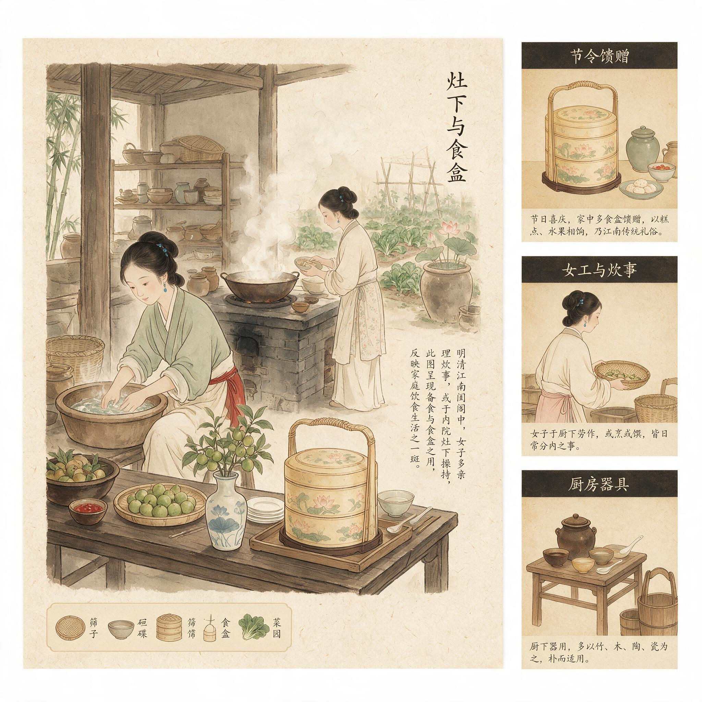

第 3 章
灶下与食盒
万历三十八年秋，苏州府城东北街陆宅后楼，三小姐的针线匣子里多了一块月白绸的零头料。同一日，前院账房先生誊写九月家用流水，蓝布封皮的大账上米面鱼肉、灯油炭薪一笔一笔记得分明。但有些花

灶下与食盒：历史出版插图
AI 生成插图，非史实影像。
销不会出现在这本账上——譬如三小姐让丫鬟去观前街采买的两钱银子丝线，用的是她私下绣帕子攒的体己钱。这笔银子的来处与去处，只在后楼的小账本上留了个记号。
类似的暗账在陆家不止一本。它们散落在各房各院的妆奁匣底、针线盒夹层，甚至灶房碗橱最里格的粗纸簿子里。这些纸片记录着一种账房先生看不见的经济——它不在田租与铺面收益的正式账目里流动，却在每日的灶火与食盒之间悄然运转。衣裳置办所涉及的银钱支配权已经在后楼织出了一道权力的缝隙，而这道缝隙延伸到灶房时，便不再只是一道缝隙——它变成了一整套围绕食物运转的物资调配体系。
陆家灶房的这口灶，是嘉靖年间砌的三眼灶。主灶眼口径一尺二寸，架大铁镬，专司煮饭烧水；左眼八寸，配浅底铁锅，日常炒菜熬汤；右眼最小，六寸口径，架一口砂锅，专炖慢火汤羹与药膳。灶台台面铺的是宜兴窑变釉方砖，用了三代人，釉面磨出细密的冰裂纹，却依旧擦得发亮。灶壁上嵌着一块青石碑记，刻的是正德年间陆家老祖宗定下的家训——“中馈惟谨”四个字，笔画里填着的朱砂已经被几十年的油烟熏得发暗。
“中馈”二字在明清江南士绅家庭的语境里是一套严整的妇德规范。《礼记·内则》中关于女子教育的那段话——女子十年不出，由姆教习婉娩听从，执麻枲、治丝茧、织纴组紃以共衣服，并在祭祀时备办酒浆笾豆菹醢——被明清家训反复征引，核心意思明确：女子掌握饮食制备的全套技能不是可选项，而是妇德的基本构成。明代《女诫》《内训》等闺范读本进一步细化：士绅家庭女性主理中馈，不仅为全家提供饮食，也是在执行一种道德展演——灶房的洁净程度、菜肴的精细程度、节令祭品的合礼程度，皆是家族门风的外显。
礼教这套话语有一个它自己无法弥合的裂缝：它把灶房划给女性，把主中馈定为女性核心职责，就在客观上承认了女性对这个空间的支配权。一个被正式授予的职责必然伴随执行该职责所需的资源配置权。可以规定她必须通烹饪、必须洁庖厨、必须备祭祀——但一旦她开始执行这些规定，就必然要介入食材采买、器物置办、人手调配、节令安排等一系列实际事务。而这些事务无一不与银钱和物资的流向相关。
这就是礼教话语的内在悖论：它试图通过中馈将女性固定在庖厨之内，却在这个过程中不得不将一部分家庭资源的支配权交到女性手中。这部分权力在名义上仍受制于家长——大宗采买需报账房审批，贵重食材需经婆婆点头——但日常饮食的运作节奏决定了不可能每一文钱的去向都经过正式审批。灶上缺一撮盐、少半瓶酱油、要一把时鲜青菜，这些琐细需求汇成一条持续的物资流，而这条物资流的闸口就握在主中馈的女性手里。
陆家现在掌灶的是二房媳妇周氏。大房媳妇三年前过世，三房媳妇随三爷在杭州任上，家中灶务便由周氏一人总理。她手下有一个灶上的管事婆子刘妈、两个粗使丫头、一个专管采买的小厮阿旺。每日清晨卯时初刻，刘妈进灶房捅开昨夜封好的灶火，大锅烧水，小锅备粥。同一时刻，阿旺已经提着竹篮在后门口等着——菜贩、鱼贩、豆腐担子、酱园伙计天不亮就沿巷叫卖，各家灶上的采买都在这时候交易。
周氏每日起身后第一件事不是梳洗，而是到灶房验看当日食材。阿旺把竹篮放在灶间条桌上一样一样拣出来：青菜两把、豆腐三块、活鲫鱼两条、猪前腿肉一斤、鸡蛋十枚、香葱半斤、生姜两块。这些是日常的定量采买，价格大致稳定——万历末年苏州府的物价，青菜一斤约银五厘，豆腐一块二厘，鲫鱼视大小每条一分至三分不等，猪肉一斤约银二分五厘，鸡蛋十枚约银一分。
一日灶上寻常菜蔬荤腥的花费总计在银一钱上下。福清一带的习俗里，腊月廿四祭灶日家家户户备好灶糖灶饼果品蜜饯供祭灶君，送神接神，而江南士绅家庭虽不贴灶君图，却也讲究灶上洁净与祭品合礼，周氏每逢祭灶日亦会额外备办糖饼果品，这笔开销同样记在她的小账上。
这是账面上的数字。但灶房的实际流水远比这个复杂。首先是食材的季节性波动——秋日蟹肥时苏州人嗜蟹成风，士绅家庭更以蟹宴为秋季社交的重要节目。万历年间苏州府蟹价，中等大小的太湖蟹每只约银三分至五分，一场像样的蟹宴用蟹二三十只不算多，单这一项就要银一两左右。其次是节令食品的制作——清明青团、端午粽子、中秋月饼、重阳花糕、冬至馄饨、年节糕团，每一样都需要特定食材和额外花费。再次是人情往来的食盒馈赠——亲戚家有喜事送糕粽、邻家添丁送红蛋甜粥、姑嫂回娘家备路菜点心。这些开销在正式账册上往往归于“杂支”或“节礼”，但其具体采买决策和支配权大部分落在主中馈的女性手中。
周氏手头有一本自己记的小账。这本账不是正式的流水簿，而是用裁开的竹纸订成巴掌大的小册子，藏在灶房碗橱最里格的一个粗瓷罐子里。账上记的不是“银几钱几分”的正式格式，而是只有她自己看得懂的记号——某日多买两斤五花肉做扣肉送姑太太、某日阿旺说鲫鱼涨价多支了五分银、某日刘妈回来说巷口酱园新到的秋油比别家贵三厘但味道好。这些细碎记录不会出现在前院账房那本蓝布封皮大账上，但它们构成了灶房经济的真实图景。
这种图景的核心特征是：它处于正式账目体系的视野之外，却又实实在在地消耗着家庭资源。万历年间江南中等士绅家庭的年开销约在银二百两至五百两之间，其中饮食花费通常占到三至四成。以陆家这样的中等士绅家庭为例——有田产约二百亩、城中坐拥一宅、年租米收入约百石、各项杂收约银百两——一年饮食开销大约在银八十两至一百二十两之间。这笔钱中的相当一部分是通过灶房这个渠道流出去的。
账房先生管的是大宗采买：每月固定从米铺进两石白米、从酱园进二十斤酱油、从炭行进五百斤木炭。这些是长期稳定的供应关系，价格有行规约束，账目清晰。但灶房每日的零碎采买——今天加一条鲜鱼、明天添几块时令点心、后天为老太太炖燕窝需要冰糖——这些小额支出不可能每一笔都走账房的审批流程。它们形成了一个灰色但合法的弹性空间：主中馈的女性在这个空间里拥有相当程度的自主支配权。
这个自主权不是写在纸面上的制度安排，而是在日常运作中自然生长出来的惯例。它的边界模糊但真实存在：周氏可以在不惊动账房的情况下决定今天多买半斤虾给孩子们添菜；可以在青菜涨价时决定暂时少买一把而多切两块咸菜；可以在刘妈说某家肉铺的猪肉更便宜时决定换一家采买。这些决策单独看微不足道，但累积起来就构成了一种对家庭资源流向的实际影响力。
更重要的是这种影响力不仅限于采买环节。它沿着食物的流动线路向两个方向延伸：向前延伸到食材的生产和供应网络，向后延伸到食物的分配和馈赠网络。
先说食材供应这一端。苏州府城的食材供应体系在万历年间已经高度市场化。城内外有专门的菜市、鱼市、肉市、鸡鸭市，每日清晨开市，由近郊农人和专业贩运商供货。陆家这样的士绅家庭并不直接去市场采买——那有失体面——而是由固定的菜贩送货上门。这些菜贩与灶房之间形成了一种半契约化的长期关系：他们知道陆家每日大约需要什么、偏好什么品质、能接受什么价格；陆家灶房的人也知道哪个菜贩的货新鲜、哪个可以赊账、哪个能在年节时弄到紧俏食材。
这种关系的维持者不是前院账房先生——他不管每日菜蔬的具体品质——而是灶房里的管事婆子和主中馈的女性。周氏通过刘妈和阿旺与这些商贩保持联络：谁家的藕粉细、谁家的火腿陈、谁家的海参发得好。这些信息不会写在任何正式记录里，但它们构成了一个围绕灶房运转的微型市场网络。在这个网络中主中馈的女性是最终的决策者：她决定信任哪个商贩、接受哪种品质、支付什么价格。
这种决策权的经济后果不容小觑。以万历末年苏州府的物价为例：上等火腿每斤约银一钱二分至一钱五分，普通火腿每斤约银八分；海参视品级每斤从银三钱到一两不等；燕窝更是昂贵，上等官燕每两索银二两以上。这些贵重食材通常用于宴客或孝敬长辈，其采买往往由主中馈的女性直接经手——因为只有她知道家中库存还有多少、近期有什么宴请计划、老太太的口味偏好是什么。这类采买虽然最终要报账房销账，但报什么价、买哪家的货这些关键决策的实际权力在谁手里是不言自明的。
再说食物分配这一端。灶房做出来的食物并不只是端上餐桌供家人食用。明清江南士绅家庭的饮食实践中食物承担着远超出果腹功能的社会角色。它是最日常的社交媒介、最柔软的人情纽带、最不易被拒绝的馈赠品。
食盒是这个分配体系的核心器物。明清江南的食盒形制多样：最常见的是圆形提梁食盒，竹编胎骨外髹朱漆或黑漆，分两层或三层，每层可放三四样点心或小菜；讲究的有螺钿镶嵌的六角食盒、雕花硬木的方胜形食盒；最简朴的是粗竹编的单层提篮，用于日常短途递送。陆家灶房里备着大小食盒七八个：两个朱漆三层大食盒用于正式馈赠，三个黑漆双层食盒用于日常走礼，还有两三个竹编提篮供丫鬟们随手拎着送粥送汤。福清习俗中新婚头年女婿须备猪蹄一双、线面五斤、五素五荤十件礼仪，用食盒装好贴上红纸送到岳父母家，可见食盒在人情往来中的核心地位。
这些食盒的流动路线构成了一个信息传递网络。刘妈每日提着食盒给住在前院的老太爷送炖品——老太爷牙口不好，周氏每日单给他炖一盅烂烂的火腿冬瓜汤或肉糜蒸蛋。这个过程中刘妈会见到前院的仆妇，闲聊几句老太爷今日精神如何、昨夜睡得好不好。丫鬟提着食盒去隔壁巷子给姑太太送新蒸的桂花糕——姑太太寡居多年，陆家每逢做点心必送一份过去。丫鬟回来时不仅带回了姑太太的回礼——往往是一小罐她亲手腌的酱菜或几块自家晒的笋干——还带回了姑太太那边的消息：谁家儿子要娶亲了、谁家婆媳闹了别扭、谁家铺子最近生意不好。
这些信息的流动看似琐碎无章，实则构成了闺阁女性了解外部世界的重要渠道。她们不能像男性那样出门应酬、打听行情、结交朋友，但通过食盒的往复传递她们建立起了一个以食物为媒介的社交网络。这个网络覆盖的范围可能相当广泛：亲戚、邻里、世交、庵堂的尼姑、常来送菜的商贩家眷。每一条食盒的传递线路都是一条信息通道——食物送到哪里消息就通到哪里。
更微妙的是食盒馈赠中的隐性奖惩机制。周氏决定给谁送什么、送多少、什么时候送，这些决策背后是一套精细的社会计算。姑太太那边要格外殷勤——她是丈夫的亲姑母，在家族中有辈分有话语权；隔壁王举人家新近走动得勤——王举人明年可能进京会试，他若高中对陆家也是好事；巷尾李秀才家近来冷淡——上次他家娘子在茶会上说了句不太中听的话。这些考量不会说出来，但它们体现在食盒的内容和频次上：给姑太太的是三层大食盒装满八样细点，给王举人家的是一盒时鲜水果加两碟蜜饯，李秀才家则只是年节照例送一份不去不来的标准礼。
这就是物际权在饮食领域的具体运作方式。它不依靠制度授权或暴力强制，而是通过对物品——在这里是食物——的获取、制作和分配过程的掌控来影响他人的处境和感受。一碗热汤送到病榻前是关怀；一份精心制作的点心送到亲戚家是尊重；而该送的时候不送、该多的时候少送、该精致的时候敷衍——这些看似微不足道的差异累积起来就构成了对人际关系的精细调控。
这种权力之所以可能恰恰是因为礼教把主中馈定义为女性的天然职责。正因为她是家庭饮食的当然负责人，所以她决定食物的分配方式就有了天然的合法性。谁也不能说她越权——她只是在履行她的本分。但正是在这个履行本分的过程中她获得了一个可以自主操作的空间。
这个空间的边界在哪里？它当然不是无限的。周氏的权力在正式的家庭等级结构中受到严格约束：大宗采买要婆婆点头，贵重食材的使用要报备，宴客菜单要符合家庭体面不能擅自削减。但这些约束本身也为她的权力提供了保护——只要她不明显越界就没有人会来仔细审查她每日在灶房里做的那些细小决策。因为这些决策太琐碎了、太日常了、太女人家的事了，不值得男人们费心过问。
这正是礼教控制最深刻的悖论：它越是把某些领域划为女人的事就越是在这些领域里为女性留出了不被严密监管的操作空间。灶房是这样的领域——烟熏火燎、油污汗渍、婢仆混杂，士大夫们不愿意多待。他们享受灶房产出的食物却不愿意过问食物的生产过程；他们要求女性精通中馈却不会去检查每一笔采买的明细。这种不愿意和不会就是缝隙之所在。
缝隙的具体尺寸可以从陆家灶房的实物清单中窥见一斑。周氏掌灶五年间陆续添置的器物包括：铜铫两把用于煮茶温酒、砂锅三只大小不同、蒸笼两套一套竹制一套杉木制、各式瓷盘瓷碗若干、锡制暖碗两只用于冬日温菜、红铜手炉一只冬日灶上取暖用。这些器物大部分不是通过账房统一采购的——那样太慢也太贵——而是周氏托阿旺在菜市边的杂货摊上陆续淘换来的。每件花费不过几分银子累积起来却是一笔不小的置办。但这些器物现在就在灶房里用着没有人在意它们的来路和价钱。
更耐人寻味的是灶房里储存的食材。除了账房统一采买的米面油盐之外灶房的橱柜里总有一些额外的东西：一小罐姑太太回赠的腌梅子、两斤刘妈乡下亲戚送来的新米、半坛王举人娘子送的糟鱼、几包尼姑庵送来的素点心。这些物品不在任何正式账册上登记——它们是礼物是人情是灶房社交网络的物质遗存。周氏对这些物品拥有近乎完全的支配权：她可以决定把腌梅子分给哪个孩子吃、把糟鱼端上哪天的早饭桌、把素点心转送给哪家邻居。
这种支配权看似微小却触及了家庭经济中一个核心问题：资源的分配权。在一个大家庭里谁得到什么、得到多少、什么时候得到——这些决策构成了日常权力运作的基本内容。正式的家产管理权掌握在男性家长手中但日常生活中的无数细小分配却是由主中馈的女性执行的。这种执行权不是写在族规家法里的正式权力但它对每个家庭成员的实际生活感受产生着持续而深刻的影响。孩子生病时能不能喝到一碗冰糖炖梨、老人冬日里能不能每日有一盅热汤、丈夫晚归时灶上有没有温着饭菜——这些看似琐细的事情构成了家庭生活质量的基本质地。而决定这些事情的人是灶房里那个掌勺的女人。
当然必须承认一个事实：这种权力并没有改变明清江南家庭的根本权力结构。女性仍然是父权制下的从属者，物际权并不能让她变成家庭的正式决策者。那些通过食盒传递的信息虽然有用但不会让她获得与男性同等的社会参与权；那些通过采买积累的私房钱虽然存在但数额有限且随时可能被收回；那些通过食物分配施加的影响虽然真实但始终依附于她作为主中馈者的身份而非独立存在。
这正是本章必须正面回应的问题：这些物质细节究竟证明了礼教控制的深化还是松动？闺秀们对饮食的精心的操演究竟是父权规范的主动展演还是暗中突破？
答案是：两者都是真的而且它们并不矛盾。
礼教确实通过中馈之责将女性更深地绑定在家庭内部角色上。当一个女性每日花费大量时间在灶房里——从清晨验菜到深夜封火——她的生活半径和精力投入确实被限制在了家庭领域。主中馈是一种规训机制：它用职责的光荣包装了对女性劳动力的占用，用道德话语遮蔽了对女性活动空间的限制。从这个角度看中馈确实是礼教控制深化的表现。
但控制从来不是单向的。每一种控制机制在实施过程中都会产生控制者预料之外的后果。中馈赋予女性的不仅是劳动负担还有对特定领域的实际掌控权。这个领域虽然被界定为内的极致——比闺房更内比绣楼更内——但它恰恰因为这份极致的内而获得了相对的自主性。外人不便进入男性不愿过问正式制度难以穿透。在这个烟熏火燎的空间里礼教的规训话语反而成了女性的保护伞：她们在执行妇德的名义下行使着实际的经济支配力。
这不是突破——这个词太强烈了暗示着有意识的对抗和制度性的改变。更准确的描述是挪用：女性把礼教分配给她们的角色职责挪用为自主操作的空间。她们没有挑战主中馈的规范本身——恰恰相反她们往往表现得比规范要求的更尽责更精细——但在尽责的过程中她们把这份职责的内涵扩展到了规范制定者未曾预料的维度。
规范说女子要通烹饪以彰妇德——那就精研食谱讲究食材把蟹酿橙做到极致。但在精研食谱的过程中就需要了解市场行情比较商贩优劣掌握时令变化；在讲究食材的过程中就需要建立自己的采买网络积累自己的鉴别经验形成自己的供货渠道；在做蟹酿橙的过程中就需要知道家中谁爱吃这一口什么时候做最合适做了以后送给谁能换来什么人情。规范制定者想象的是一个只会听话做饭的女人；现实中出现的却是一个在灶台上经营着自己小世界的管理者。
这种挪用的精妙之处在于它的隐蔽性。它不声张不挑战不要求正式承认。它只是在规范允许的范围内把规范没有明确禁止的事情做到极致。当周氏决定多花三分银子买更好的火腿时她的理由无可挑剔：老爷近日胃口不好用好火腿吊汤才能让他多吃半碗饭。这个理由完美地嵌在妇德的框架内——体贴丈夫饮食正是主中馈者的本分。没有人会追问为什么偏偏选这家火腿铺的火腿、为什么不等账房统一采买、为什么多花这三分银子。这些追问不会出现因为多花三分银子让丈夫多吃半碗饭这桩交易在家庭伦理的逻辑里完全合理。
那么这种挪用究竟有没有改变权力结构？如果改变权力结构指的是让女性获得与男性平等的制度性地位答案是没有。但如果改变指的是在日常生活的微观层面重新配置了资源的流向和决策的权重答案是有的——尽管这种改变微小局部不稳定但它真实存在。
万历三十八年九月二十日陆家灶房的流水是这样的：清晨阿旺采买日常菜蔬花费银九分五厘；上午刘妈去酱园打酱油两斤花费银四分；午间周氏吩咐额外买蟹六只准备晚间做蟹酿橙花费银一钱八分；傍晚姑太太那边送来一盒新做的桂花栗粉糕作为回礼；入夜后周氏让小丫鬟把中午剩的半碗蟹酿橙端给前院账房先生当宵夜——老先生连日熬夜盘账周氏觉得该给他补补。
这一天的流水里，每一笔花费都有它的账面去向，每一份食物都有它的流动终点，每一次馈赠都有它的社交含义。账房先生会在他的蓝布封皮大账里，记下当日灶上日用银的总数，但他不会记下那半碗蟹酿橙，不会记下姑太太那盒桂花栗粉糕的回礼暗示着什么，不会记下周氏决定额外买蟹时，心里盘算的是晚间丈夫要请两位同年来家中小酌。这些记不下来的东西，就是物际权运作的真实场域。它不在制度条文里，不在族规家法里，不在正式账册里。它在每日灶火的明灭之间，在食盒提梁的摩挲痕迹里，在一个女人决定多抓一把米还是少放半勺盐的那些瞬间里。
这些瞬间单独拿出来看都微不足道。但历史不是只由大事件构成的。无数个这样的瞬间累积起来就在礼教秩序的表面上蚀刻出了细密的纹路——不是撕裂不是颠覆而是缓慢的一寸一寸的挪移。这种挪移的方向不是朝向制度性的解放而是朝向日常实践中实际自主空间的扩大。
陆家老太太当年刻在灶壁上的“中馈惟谨”四个字还在朱砂的颜色被几十年的油烟熏得发暗但笔画依然清晰。周氏在灶前忙碌时这四个字就在她身后。她没有去擦它也没有去改它但她每日在灶前做的无数细小决策已经让这四个字的含义变得比她婆婆那代人理解的复杂得多。“谨”还是谨——精细勤勉不马虎——但谨的内容已经从单纯的遵守规矩扩展到了对食材品质的判断对市场行情的把握对人情往来的计算。
这就是日常生活的历史辩证法：最保守的规范框架里往往孕育着最灵活的操作空间；最不起眼的日常实践往往积累着最深远的演变潜能。中馈把女性锁在了灶房里但也把灶房的钥匙交到了她们手中——虽然这把钥匙打不开大门但它能打开橱柜打开食盒打开那些正式权力视野之外的流通渠道。
当秋日的蟹酿橙从陆家灶房的蒸笼里端出来时，它不只是《山家清供》里记载的那道南宋古菜在晚明苏州的一次复现——虽然做法确实考究：取肥蟹六只剔出蟹黄蟹肉与橙肉橙汁同入蟹壳加姜末绍酒上笼蒸一刻钟出笼后浇一勺滚热的猪油激出香气趁热上桌。这道菜的材料花费不算便宜——六只太湖蟹在万历末年苏州府约值银一钱五分至二钱，四只江西广橙约值银四分，加上配料和柴火，一道蟹酿橙的总成本约在银二钱五分左右，相当于一个熟练织工两日的工钱。明代饮食文化在江南士绅阶层追求“雅致饮食”，注重本味、时令与意境融合，蟹酿橙正是这种风气的体现。
但这二钱五分银子花出去产出的不仅是一道菜。它是对丈夫口味的体贴是对家庭宴客体面的维护是周氏作为主中馈者能力的展示。如果这道蟹酿橙做得好丈夫在同年前长了面子周氏在家庭内部的话语分量就会重那么一点点——不是制度性的增重而是日常感受层面的积累。这种积累缓慢得几乎看不见但它确实在发生就像灶台上的釉面砖被几十年如一日的擦拭磨出冰裂纹一样。
而那些没有端上餐桌的食物去了哪里？它们装在食盒里沿着巷陌流动：一碟蟹酿橙送到隔壁巷子的姑太太家附带的口信是新秋蟹肥特奉姑母尝鲜；一笼桂花栗粉糕送到庵堂感谢尼姑上月为老太太诵经祈福；一碗火腿冬瓜汤端到前院账房老先生放下算盘接过碗时说了句二奶奶费心。每一次食盒的开合都是一次社会关系的确认或调整每一个收受食物的人都在这个过程中被纳入了某种互惠网络。
这个网络的核心枢纽不在前院客厅——那里是男性家长的正式社交空间——而在后楼灶房。灶房里那口常年不熄的三眼灶就是这个网络的物理心脏：它的火焰舔舐锅底锅里的食物沿着食盒的路径流向四面八方每一条路径都携带着信息与情感的分量。当食盒从一户人家递到另一户人家时它传递的不只是食物。它还传递着关于谁家近来如何的消息——丫鬟放下食盒时总会聊几句——关于送礼者意图的暗示——送蟹酿橙意味着重视这层关系——关于收礼者态度的反馈——回礼的厚薄快慢都是信号。
这些信息在正式的社会交往渠道中往往不被记录和承认但它们对闺阁女性理解自己所处的社会世界至关重要。一个足不出户的士绅家庭女性如何知道外面的世界在发生什么？她不能去茶馆听消息不能去码头看货船不能去衙门看告示。但她可以通过食盒的往复传递拼凑出一幅相当完整的社会图景：谁家儿子娶亲排场大说明这家近来得意；谁家回礼越来越薄说明这家境况不佳；谁家突然送来重礼说明有事相求；菜贩说今日鱼价涨了说明最近漕运不畅；酱园伙计说新到一批金华火腿说明秋后腌腊季节开始了。
这些信息的碎片化程度很高，准确性也不稳定，但它们构成了一个替代性的信息网络。这个网络不依赖文字——大部分闺秀的识字率有限——而依赖口耳相传和实物传递。食盒就是它的硬件载体，食物就是它的信号编码，灶房就是它的交换中心。
理解了这一点就能理解为什么中馈这个看似纯粹的家庭内部职责会具有超出家庭边界的意义。当周氏决定给谁送什么食物时她不仅是在执行家庭主妇的本分也是在参与一个更大范围的社会信息交换系统。这个系统的运转不依赖官方制度或商业契约而依赖日常生活中的互惠惯例和人情伦理。在这个系统中主中馈的女性不是被动的执行者而是主动的操作者——她们决定信息的流向和节奏决定关系的维系或疏远。
当然必须再次强调：这一切都没有改变明清江南社会的根本权力结构。女性仍然被排斥在科举官场和宗族正式决策之外。物际权再有效也不能让周氏去参加家族会议的表决不能让她以自己的名义签订契约不能让她拥有独立于夫家的法律身份。它是权力缝隙里的权力是体制夹层中的操作空间是弱者用日常实践织就的保护网和影响力网络——但它不是制度性的解放。
然而历史研究的意义从来不只在于辨认谁赢了谁输了。理解一个社会的运作机制需要看到的不仅是制度条文怎么写也是人们在日常生活中怎么活。物际权这个概念的价值不在于它宣称女性拥有了某种了不起的力量而在于它揭示了一个被传统史学忽视的事实：即使在被严格规训的空间里人们仍然能够通过掌握物品的流动来创造出属于自己的操作余地。这个余地不大但它真实存在。它在灶火的温度里在食盒的重量里在一个女人每日清晨站在后门口验看食材时那双眼睛的判断里。
万历三十八年九月二十一日清晨卯时初刻陆家灶房的烟囱冒出第一缕青烟。刘妈捅开灶火大锅烧水小锅备粥。阿旺提着竹篮在后门口等着菜贩送货。周氏照例到灶房验看食材：青菜新鲜鲫鱼活泼猪肉肥瘦适中。她点点头刘妈开始洗切备料一天的灶上劳作就此展开。
同一时刻，前院账房先生翻开蓝布封皮的大账准备记录今日的开销。他会写下米面若干、鱼肉若干、炭薪若干。他不会写下的是：今日午间周氏会额外吩咐蒸一笼茯苓糕送给巷尾的李秀才家——上次茶会的事过去了两个月，周氏觉得冷淡得够久了该回暖了；傍晚姑太太那边会送来一碟新腌的酱萝卜作为昨日蟹酿橙的回礼；入夜后周氏会让小丫鬟端一碗桂圆红枣汤给正在灯下读书的儿子——这孩子近来用功瘦了不少。
这些琐细的事情不会进入任何正式记录。但它们构成了陆家日常生活的基本质地构成了一个女性在礼教规范内为自己开辟的操作空间构成了一种没有写在纸上却真实运转着的权力形态。灶膛里的火苗舔着锅底蒸笼里的热气氤氲上升食盒的提梁被一双双女人的手摩挲得光滑温润。这些热量和触感不会留下文字档案但它们刻印在每一个经历过那个时代的人的身体记忆里——母亲端来的那碗热汤是什么味道祖母做的年糕是什么口感姑母送来的酱菜在哪只罐子里装着。
而那些制造了这些身体记忆的女性们那些在灶前度过一生中大部分时光的女性们她们手中的勺子搅动的不仅是锅里的羹汤也是家庭内部资源分配的微妙平衡；她们案板上切的不只是葱姜蒜末也是社会关系网络的精细纹理；她们食盒里装的不仅是几样点心小菜也是一个女性认知世界和影响世界的有限但真实的媒介。
这就是吃这件事在明清江南闺阁中的全部重量：它把礼教的规训转化成了一项可以操作的技能又把这项技能转化成了对家庭资源流向的实际影响力。这种转化没有改变制度条文但它改变了日常生活的质地；没有颠覆父权结构但它在结构内部蚀刻出了属于自己的纹路；没有让女性获得解放但它让她们在被规定的位置上活出了一些规定之外的东西。
灶台上的那口锅还在冒着热气。这热气蒸腾上去，模糊了灶壁上“中馈惟谨”四个字的笔画轮廓——不是抹掉，只是让它们看起来不那么棱角分明了。而那些沿着巷陌流动的食盒仍在继续它们的旅程。每一个食盒都是一条信息的舟楫，在闺阁与外部世界之间往返摆渡。这条摆渡线不会出现在任何地图上，但它比许多画在地图上的线路更深刻地塑造了明清江南女性认知世界的方式——她们通过食物的馈赠感知社会关系的亲疏远近，通过采买的经验积累市场知识，通过灶房的日常管理建立起一套虽不正式却行之有效的资源调配体系。
这套体系运转的核心动力不是挑战规范而是利用规范：利用中馈之责赋予的合法性利用女性内职提供的保护伞利用日常琐务不被重视的灰色空间。在这些缝隙里一种非正式的权力形态缓慢生长——它不声张不宣言不留下文字档案但它真实地存在于每一笔未入账的花销里每一份不在菜单上的馈赠里每一次不经审批的决策里。
当三小姐后楼的针线匣子合上时陆家灶房的蒸笼正冒出今秋第一笼蟹酿橙的热气。两件事看似毫不相干却在同一个家庭经济体系中分享着相同的逻辑：那些不被正式账册记录的银钱流向那些不被制度承认的支配空间那些在日常实践中一寸一寸挪移出来的自主余地共同构成了明清江南闺阁女性理解权力运用权力和传递权力的隐秘通道。这通道不宽但足以让一只食盒通过。